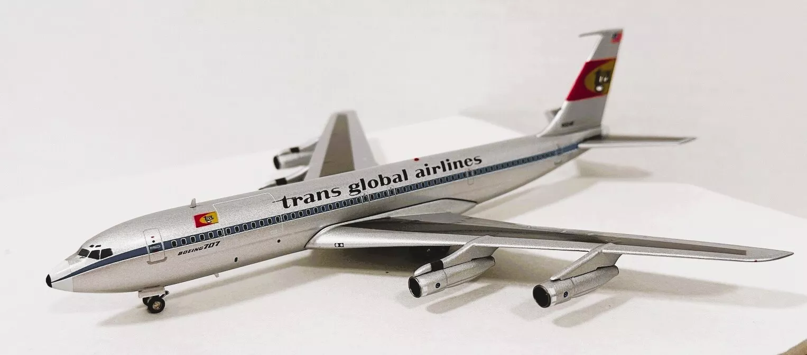
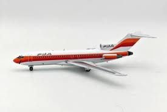
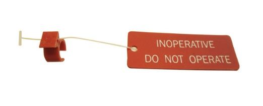
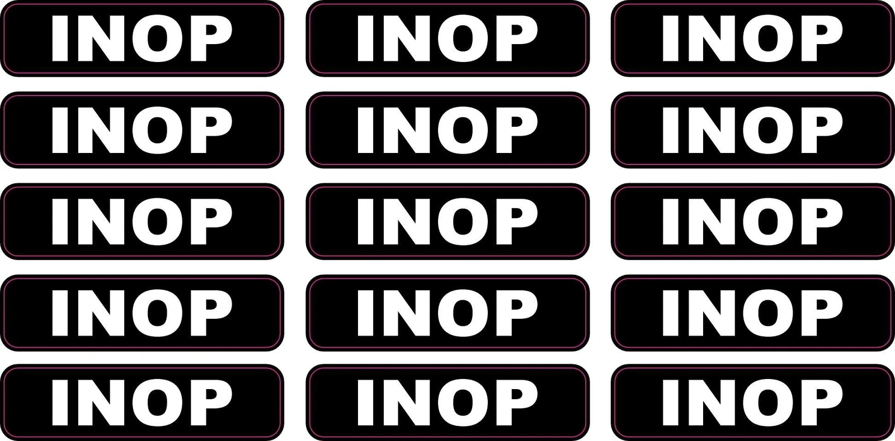
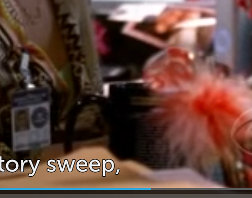
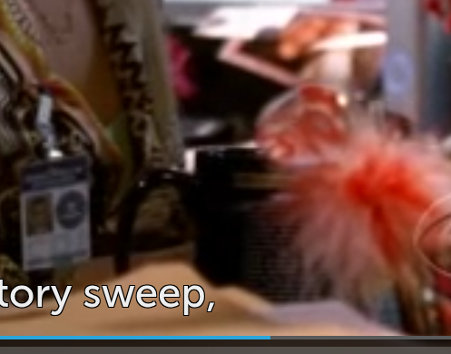
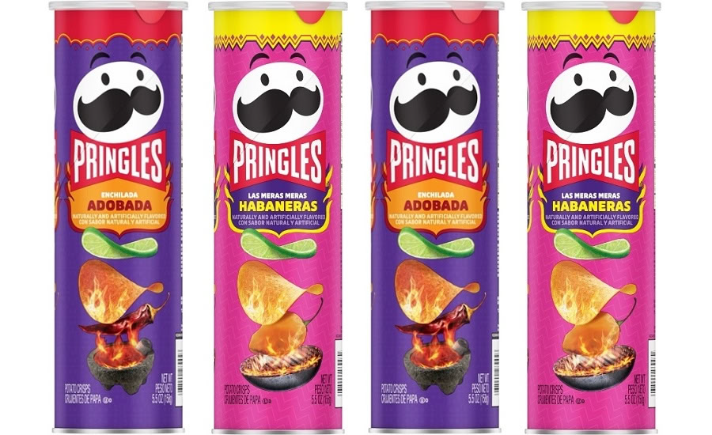

Wishlist
Кошелёк¶
Это такое пожелание вида "выберите за меня". У меня сейчас потрёпанный кошелёк, который используется, только чтобы переложить из одного рюкзака в другой, он даже не закрывается со всем содержимым - 11 карточек, немного всяких визиток и обычно пару банкнот, иногда карты вываливаются и я боюсь их потерять. Из отделения для монет они тоже постоянно вываливаются. В общем было бы супер что-то, что:
- может вместить и закрыться со всей пачкой карточек, очень желательно с запасом для роста этой пачки
- имеет надежно закрывающееся отделение для монет, достаточно небольшого
А вот отделение для банкнот не очень важно, больше десятка и не бывает в кошельке, и пользуюсь нечасто. Возможность поместить в карман тоже, плюс при прочих равных.
Авиатренажёр¶
Ну наверное было бы прикольно, но только если не одному идти. Хотя позориться перед кем-то тоже стрёмно, ы. Я нашёл такие места:
- 737.by - ул. Игоря Лученка, д. 26 м. «Аэродромная»;
- letsfly.by - Тимирязева 74а, ТЦ PALAZZO и Независимости 117а,
ТЦ Александров Пассаж; - navzlet.by - пр-т Независимости — 117А, ТЦ «Александров Пассаж», похоже просто сертификат на предыдущее место.
Хочется именно Boeing; в смысле не L-39, например, Airbus тоже было бы классно, если бы была такая опция. Ну и чтобы можно было повторить этот мув (Казань), или этот (Пермь) - как раз оба Boeing 737-500.
Модель самолёта¶
Упарываюсь по референсам на
- катастрофу на Тенерифе - Boeing 747-100 в ливрее PanAm было бы суперкруто, но модельки на алиэкспрессе все 747-400 (главное отличие - длина число иллюминаторов на верхней палубе).
- фильм "Аэропорт" - Boeing 707 в ливрее вымышленной Trans Global Airlines хорош, жаль немного дороговат 
- столкновение над Сан-Диего; да и любые 727-е и ливрея Pacific Southwest Airlines офигенны, может что-то подобное найдётся

Да в принципе любой Boeing крута, 747, 787, 777, 727, 707, 737. DC-9/MD-80 в старой - с лакированным полированным алюминием, а не просто серой - ливрее American Airlines красив (classic bare metal 1968-2013), но моделька может быть покрашена не очень, серым, а не металлик
Ливреи PanAm (Globe 1958-1984, а Billboard херня) и KLM огонь. Ливрея самого боинга хороша, Qantas норм. Вот такая штука (с подсветкой) выглядит классно (если детализация на фото не обман), но ливрея херня (UPD: вот этот - красавец). Модельки без шасси, тупо на подскавке - неоч. С шасси могут косячить с количеством (например 777 с двумя колёсами) или просто очень неаккуратно.
Книга про котострофы¶
Загадки авиакатастроф: истории из черного ящика | Кайдалов Антон Сергеевич
Клавиатура¶
Тут мои вкусы очень специфичны, да, ещё более, чем в предыдущих пунктах. Я не люблю мышь, я привык к тачпаду и к ножничной клавиатуре своего ноута (Samsung NP940X5N, но у самсунгов они похожие все, у очень старых только больше ход). Она вроде похожа на клавиатуры в маках тактильно, например в рабочем HP ощущается совсем по-другому, у обычной клавиатуры (Xiaomi WXJS01YM) вообще кажется ужасно большой ход клавиш. У Harper KBTCH-155 клавиши ощущаются похоже, но увы - тачпад сбоку полная херня. И увы у всех клавиатур с тачпадом он расположен так. По факту для меня идеальная клавиатура - это нижняя часть ноута, какого-нибудь самсунга или мака, я даже искал, есть ли какие-то DIY-проекты с маками такие и такие, но увы не нашёл дешевых маков с убитым экраном. Проводная или нет неважно, если что (все равно ничего такого нет, такая увы не то, да и десигн thinkpad-ов не нравится, а Microsoft Surface Pro Keyboard слишком маленькая). Может быть кусок Framework Laptop сработает, хз (UPD: десигн херня).
Одноплатник¶
Но очень не уверен. Было бы прикольно прикрутить экран от умершего ноута к какому-нибудь Raspberry Pi 500, но на это время надо.
Ардуино¶
Как и предыдущий пункт, мб было бы прикольно поиграться, но нужно время.
МиниПК¶
Какой-нибудь маленький аккуратный (как Intel NUC или Mac Mini, ещё Beelink был какой-то макоподобный на вид), не особо мощный (D54250WYKH например вполне ок), упороться и поставить арч, фряху, ещё что-нибудь, вот они слева направо. Хотелось бы готовое к использованию (пара планок древней DDR3 памяти от ноута есть, а вот диска нет), но не обязательно; не имею ничего против б/у штук. Как и предыдущий пункт, исключительно поиграться.
Модель автобуса/троллейбуса/трамвая¶
Что-то типа такого или такого, но с Минскими деталями (цвет, номера и т. п.) UPD: ссылочка. Троллейбусы/трамваи вообще было бы огонь, но они кажется только у vivascale есть.
Авиамерч ака ремувки¶
- Boeing INOP, ebay (пишет, что недоступно в вашей локации), их шоп. В shopfans сказали, что доставить не могут - "расходные материалы для воздушных судов" в списке запрещённого
- Boeing 737 Master Caution брелок, ebay (пишет, что недоступно в вашей локации), алиэкспресс. С shopfans та же история.
- Настоящий CIRCUIT BREAKER LOCKOUT RING, или на ebay. Такое понятно не привезут из США 
- Тег-наклейка, пример на ebay 
- Что-то из aviationtag, A380 мб. Хотя как-то грустно это.
Мерч Criminal Minds и Mindhunter¶
- Кружка как у героев CM - например на ebay, ещё одна. Но бывает отличающиеся - с значком или без ничего, такое нинада. И есть маленький нюанс - штуки с эмблемой FBI попадают под запрет на экспорт (не помню точно, что именно, то ли любые федеральные агенства, то ли любые law enforcement агенства, то ли федеральные law enforcement, сейчас найти не смог, но раньше хотел купить, и обнаружил, что не получится). UPD: а в shopfans сказали можно.
 (s1e3, 12:49)

(s2e10, 31:26)
(s1e3, 12:49)

(s2e10, 31:26)
Съедобные штуки¶
- Остро-кислые чипсеки 